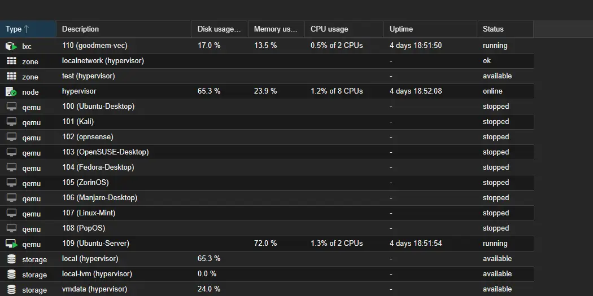
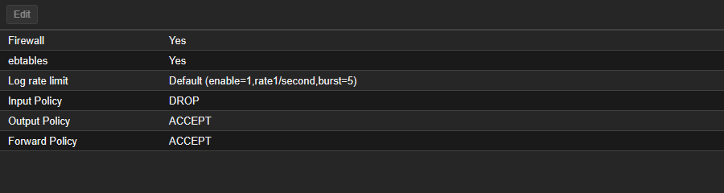

Proxmox homelab
I built JHomelab on an old Alienware laptop so I could work with a real hypervisor, run Linux services and experiment with networking outside my everyday computer. The project brought together the Linux, virtualization and networking work I had been doing in class.
I installed Proxmox VE, created the guest machines, configured the lab network and added a Docker service host. The result is an ongoing personal lab: two service guests start automatically while desktop and security-lab guests are reserved for individual sessions. My work centers on infrastructure setup and administration; the deployed applications are existing software projects.
Evidence date: September 22, 2026. Guest states, service checks and screenshots come from the repository's AI-assisted read-only health check. It left stopped guests off and made no infrastructure changes. These observations have not been refreshed for this page.
How the lab fits together
- Physical connectionHome router
Wireless bridge
Flat access networkWired backhaul and VLAN switching planned - Proxmox hostAlienware 15 R3
16 GB physical RAM
SSD + separate guest-storage HDDVirtual machines and one LXC container - Guest attachmentsvmbr0: Ubuntu service VM + Debian LXC
testnet: nine experimental VMsService migration to SDN planned
The home router provides the upstream connection. A range extender acts as the wireless bridge into the lab, with its SSID broadcast disabled. Proxmox runs directly on the laptop and provides storage, guest management and virtual networking. The physical access network remains flat; a managed switch and VLAN work are future additions.
Host and storage
The September check recorded Proxmox VE 9.2.20, kernel 7.0.14-17-pve, on an Alienware 15 R3. The hardware places practical limits on how many guests can run together.
| Component | Use in the lab |
|---|---|
| Intel i7-7700HQ, four cores and eight threads | Compute shared by the virtual machines |
| 16 GB RAM | Physical memory available to the host and running guests |
| 128 GB SSD | Proxmox installation and the local / local-lvm pools |
| 1 TB hard drive | vmdata storage for guest disks |
Scroll horizontally to read the full table on a narrow screen.
The inventory assigns about 47 GB to the VMs plus 4 GB to the LXC container, using rounded values. That exceeds physical RAM. VM 109 and CT 110 were the two running guests and both had automatic startup enabled; VMs 100–108 were stopped. I use the experimental guests for individual sessions, within the host's available resources.
All three storage pools were active in the check. Their recorded usage was 65.33% for local, 0.01% for local-lvm and 23.96% for vmdata. Available capacity did not resolve the separate boot-SSD health and backup concerns described below.
Linux guests and container services
The lab has ten configured VMs and one LXC container. The experimental group includes Ubuntu Desktop, Kali, openSUSE, Fedora, Zorin OS, Manjaro, Linux Mint and Pop!_OS, plus OPNsense. Separate guests let me try different Linux environments without changing my daily computer. OPNsense is a single-NIC gateway project in progress, not the established boundary between the service and lab networks.
The service tier is split between a full virtual machine and an unprivileged Linux container:
| Guest | Recorded allocation and placement | Responsibilities |
|---|---|---|
| VM 109 — Ubuntu Server | 2 GB RAM, 32 GB disk; vmbr0 |
Docker service host. Homepage provides a dashboard, Uptime Kuma monitors service health, and Portainer manages containers. |
| CT 110 — Debian 13.1 | Unprivileged LXC; 2 cores, 4 GB RAM, 512 MiB swap, 24 GB disk; vmbr0 |
GoodMem memory service with PostgreSQL/pgvector. GoodMem runs in Docker inside this separate LXC guest. |
Scroll horizontally to read the full table on a narrow screen.
Homepage, Uptime Kuma and Portainer responded at their documented endpoints. CT 110's container state and GoodMem API response were also checked. VM 109's operating-system release and Docker inventory remained unverified because of the guest-access problem described below.

Network configuration
I used Proxmox software-defined networking to create an experimental virtual network alongside the main LAN connection. The recorded configuration has zone test and VNet testnet. They are different objects: the zone contains the VNet, and the lab guests attach to the VNet.
| Configuration | What the September evidence shows |
|---|---|
| Experimental guests | VMs 100–108 attached to testnet |
| Address management | Proxmox IPAM mappings for the gateway and those nine VMs; dnsmasq present for DNS/DHCP |
| Egress configuration | A source-NAT rule present on the host |
| Service guests | VM 109 and CT 110 still attached to vmbr0; moving them onto SDN is planned |
Scroll horizontally to read the full table on a narrow screen.
IPAM mappings associate guest identifiers with assigned addresses. All nine lab VMs were stopped during the check, so guest DHCP and outbound connectivity remain untested.
Firewall policy and its limits
The datacenter firewall was enabled with seven accept rules covering lab traffic, DNS/DHCP and management access including ICMP, SSH and the Proxmox web interface. Input defaulted to DROP; output and forwarding defaulted to ACCEPT, so the policy allowed outbound and forwarded traffic by default.

The same check found three issues to resolve before expanding the network design:
- One rule's comment described internet access, while its destination was the home LAN.
- The nftables firewall was active, but legacy firewall status reported pending changes.
- Global IPv4 forwarding was
0, while forwarding onvmbr0andtestnetwas1.
The effect of these settings on live lab traffic remains untested. Checking guest DHCP, permitted egress and denied traffic is the next step before relying on the intended policy. Per-guest and per-network rules, service-guest migration and managed switching remain planned work.
Recorded validation
The September 22 check covered host health, the Proxmox interface and service responses:
| Check | Recorded result | What remained untested |
|---|---|---|
| Hypervisor | Core services active, no failed systemd units listed, web interface responded | Recovery or sustained availability |
| VM 109 endpoints | Homepage HTTP 200; Uptime Kuma HTTP 200 after redirect; Portainer HTTPS 200 | Individual application workflows and direct Docker inventory |
| GoodMem | Docker health check healthy; API reported server-v1.0.285 |
Complete client workflows and service recovery |
| PostgreSQL/pgvector | Container running with image pgvector/pgvector:pg17 |
Database integrity, backup restoration and separate reachability of every published port |
| Storage | Three pools active; HDD SMART passed with zero listed reallocated, uncorrectable or CRC-error counters | Recoverability of guest disks and the boot SSD's unresolved warning |
Scroll horizontally to read the full table on a narrow screen.
The HTTPS probes accepted local self-signed certificates, leaving certificate trust unverified. Application workflows and recovery still need the separate tests noted above.
Unresolved operational findings
A passing SMART summary with persistent errors
The boot SSD's overall SMART result was PASSED, but the detailed counters recorded 24 offline-uncorrectable sectors, 3 reported-uncorrectable errors and 3 end-to-end errors. The September 22 values matched September 10, while recurring SMART alerts continued. Reading the aggregate result alone would have missed the warning.
No SSD repair or replacement was performed during the check, and the evidence does not establish a specific hardware root cause. The related backup inspection found no scheduled Proxmox backup jobs or local backup files; manual and off-host copies were not checked. The report also records backup=0 on VM 106's primary disk, a disk-level backup exclusion. No restore test was recorded.
The next step is to establish recoverable backups and review the SSD before disk work.
Responding services with incomplete guest access
VM 109's web applications responded while its guest agent reported not running. An SSH attempt from the trusted hypervisor reached authentication and was denied. This left the operating-system and Docker inventory inspection incomplete without establishing a service outage.
The cause is unresolved, and no repair has been verified. Authenticated access is needed to inspect the agent installation and service state, then check guest queries again.
GPU passthrough preparation
The laptop has a GTX 1070 Mobile alongside its integrated graphics. The September check found the NVIDIA GPU bound to vfio-pci and assigned in the configurations for VMs 100, 105, 107 and 108. Those guests were stopped; VM 109 had no GPU assignment.
The build journal also records IOMMU preparation and the GRUB setting pcie_acs_override=downstream. Guest GPU operation and hardware-accelerated transcoding remain untested; these host settings are a record of preparation, not a verified passthrough procedure. Jellyfin with GPU transcoding remains a roadmap item.
What I have learned
Services and infrastructure setups have failed on me multiple times. Working through those failures is the part that teaches me the most. Having a lab means I can try a setup, see what breaks and figure out what needs to change.
Next changes
The immediate operational follow-ups recorded in the health check are backup coverage, the SSD warning, guest observability and network-policy validation. The broader build roadmap includes replacing the wireless bridge with a wired connection, adding managed switching, extending SDN to the service guests, and working on reverse proxying, internal DNS and shared storage.
Nginx Proxy Manager, RustDesk Server, a NAS guest, SIEM/IDS tooling and GPU media services are planned additions. The existing OPNsense guest remains a work in progress.
Sources and artifacts
- Build journal and guest inventory, September 22 revision: host, storage, service placement, SDN configuration and roadmap.
- Read-only health-check report, September 22: recorded results, access limits, storage warnings and untested behavior.
- Original guest-inventory capture and firewall-options capture: the historical images reproduced above.
{kind=link}
{kind=link}
The repository contains documentation and screenshots. Sanitized configuration exports, Compose definitions and a complete rebuild procedure are still missing.